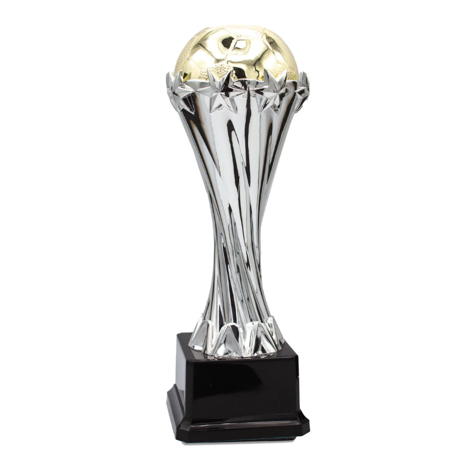
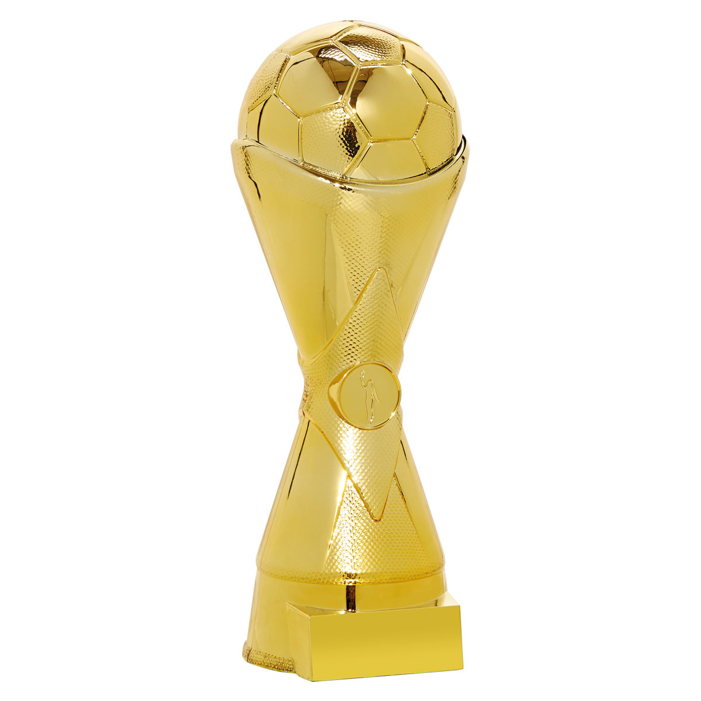
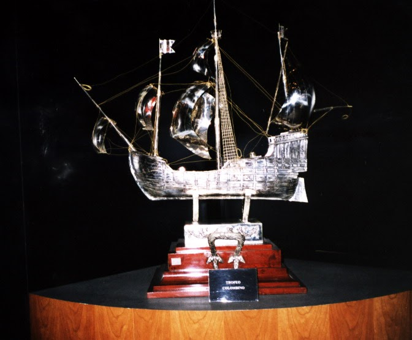
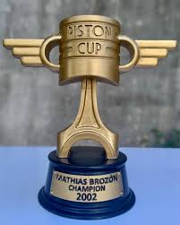
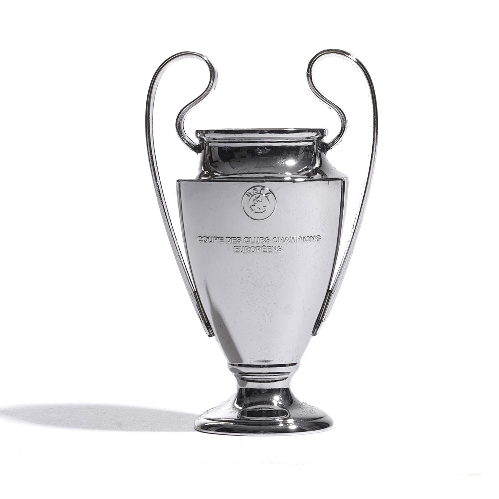

| Título | Año |
|---|---|
| Segunda División | 1998-99 |
| Tercera División | 1981-82 |
| Trofeo Colombino | 2012-13 |
| Copa Pistón | 2010-11 |
| Champions League | 2007-08 |
- Segunda División: 1 (1998-99)
-
En la temporada 1988-89, el Getafe CF emergió como el equipo más destacado de la Segunda División. Con determinación y pasión, los azulones lograron coronarse campeones, catapultándose a la Primera División por primera vez en su historia. Este triunfo no solo marcó un hito en su trayectoria, sino que también encendió el fervor de su fiel afición.
 - Tercera División: 1 (1981-82)
-
En la temporada 1981-82, el Getafe CF se alzó como campeón de la Tercera División con una actuación sobresaliente. Este logro fue fundamental para el crecimiento del club, marcando un antes y un después en su historia. La ciudad de Getafe vibró de emoción, celebrando con entusiasmo el éxito de su equipo.
 - Trofeo Colombino: 1 (2012-13)
-
En la edición 2012-13 del Trofeo Colombino, el Getafe CF demostró su clase alzándose con el título. Con un juego sólido y bien organizado, lograron imponerse ante rivales competitivos, dejando una marca en este prestigioso torneo. La victoria fortaleció el espíritu del equipo y emocionó a su afición.
 - Copa Pistón: 1 (2010-11)
-
En la temporada 2010-2011, el Getafe CF se coronó campeón de la Copa Piston con una actuación memorable. Los azulones demostraron un juego apasionado y estratégico, superando a equipos de alto nivel. Este triunfo añadió un trofeo importante a su colección y reforzó tanto la moral del equipo como el entusiasmo de sus seguidores.
 - Champions League: 1 (2007-08)
-
En la temporada 2007-08, el Getafe CF hizo historia al conquistar la UEFA Champions League. Con un desempeño excepcional y una valentía admirable, lograron derrotar a algunos de los equipos más poderosos de Europa. Este triunfo inolvidable elevó al club a la élite del fútbol mundial y dejó una marca indeleble en su legado.
